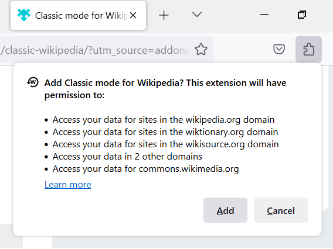

In January 2023, the Wikimedia Foundation started rolling out a new design on the English version of Wikipedia, as well as on its sister projects. For various reasons, many Wikipedia readers and editors expressed their frustration with that. Fortunately, there are a lot of options to get the old interface back, without having to create an account on Wikipedia.
I've been developing a solution to this problem, initially for my own use, under the form of a Firefox add-on, "Classic mode for Wikipedia". You can very easily install it by following this link. You can also check other users' reviews before choosing to install it.
How to use it? Just install the add-on, and any Wikipedia page you visit will now have the "classic" look predating 2023.
This is a non-commercial add-on, free, open-source, and without advertisement (and it will stay this way). The add-on also works with some other popular Wikimedia websites: Wikimedia Commons, Wiktionary, Wikidata, Wikisource, and MediaWiki.
In order to work, when installing it, the add-on will ask your permission to access your data for Wikipedia and Wikimedia websites. Below is a screenshot of what the request pop-up should look like. Simply click the "Add" button the first time you install the add-on:
Nothing to worry about, the add-on does not collect or send your data anywhere, it just needs to know when you are accessing a Wikipedia page, in order to offer you automatically the classic interface.
Below you will find additional information about it in case you are interested (features, contact information, privacy, license, etc.). I hope you will find this add-on useful!
In case this add-on is not exactly what you're after, I listed a couple of other similar free and functional add-ons by other developers. The list is available just here.
--
Page last updated on January 24, 2023